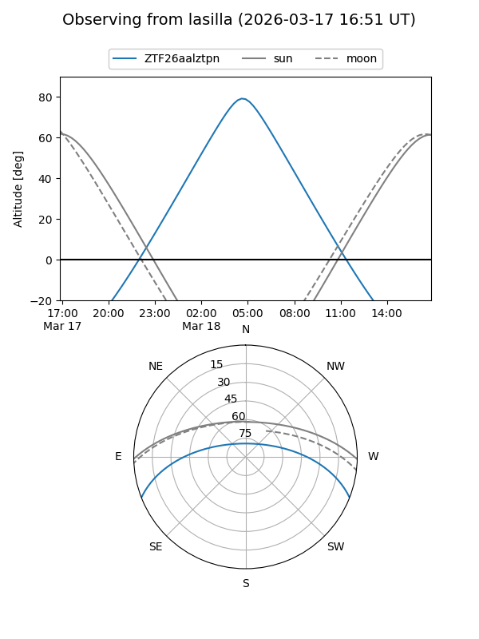
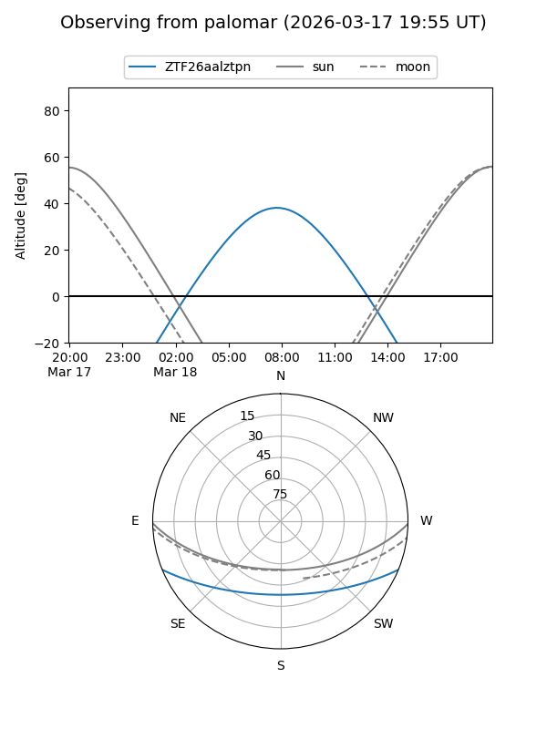

ZTF26aalztpn
Target ZTF26aalztpn at 2026-03-18 09:48
Aliases and brokers:
FINK: link
Lasair: link
ALeRCE: link
alt names
ZTF26aalztpn (ztf,fink_ztf)
Coordinates:
equatorial (ra, dec) = 174.6448,-18.37470
equatorial (HMS+DMS) = 11:38:34.75,-18:22:28.92
galactic (l, b) = (279.7165,+41.18943)
Flags:
Photometry:
last ztfg=17.14
1 ztfg detections
Lightcurve
Visibility


Additional plots